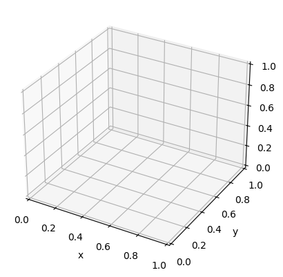
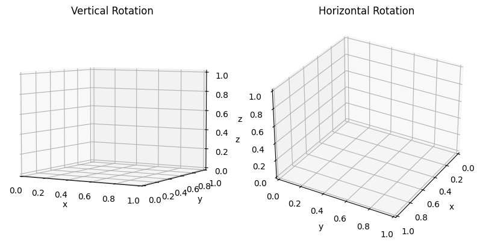
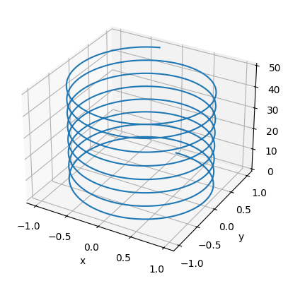
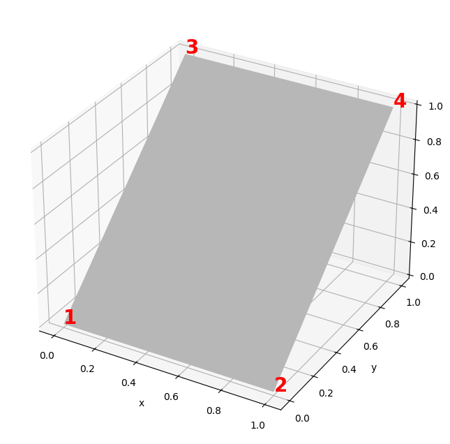
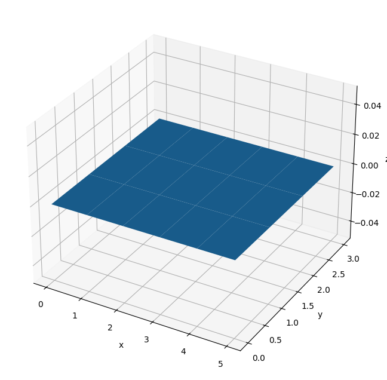
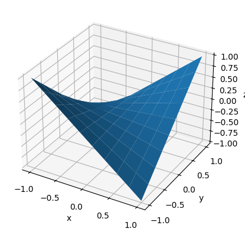
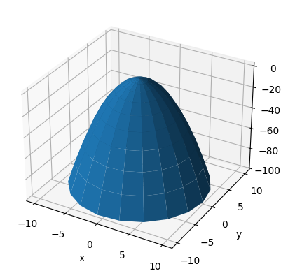
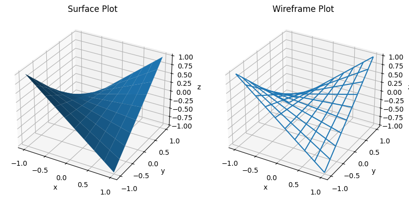

4.3 3D Plotting#
To use Matplotlib’s 3D plotting functionality you first need to import the mplot3d module:
from mpl_toolkits import mplot3d
Then you need to pass the keyword argument projection="3d" into any of Matplotlib’s axis creating functions. For example:
from mpl_toolkits import mplot3d
import numpy as np
import matplotlib.pyplot as plt
fig = plt.figure()
ax = fig.add_subplot(111, projection="3d")
ax.set_xlabel('x')
ax.set_ylabel('y')
ax.set_zlabel('z')
plt.show()

Note that this is a little less straight forward for the plt.subplots() function:
from mpl_toolkits import mplot3d
import numpy as np
import matplotlib.pyplot as plt
fig, ax = plt.subplots(subplot_kw=dict(projection='3d'))
ax.set_xlabel('x')
ax.set_ylabel('y')
ax.set_zlabel('z')
plt.show()
Rotating the Viewing Angle#
You can rotate the viewing angle of the figure programmatically using the view_init() function:
view_init(elev=None, azim=None)
where
elevis the elevation angle in the vertical plane in degreesazimis the angle in the horizontal plane in degrees
from mpl_toolkits import mplot3d
import numpy as np
import matplotlib.pyplot as plt
fig, ax = plt.subplots(1, 2, subplot_kw=dict(projection='3d'), figsize=(10,8))
# Vertical Rotation
ax[0].set_xlabel('x')
ax[0].set_ylabel('y')
ax[0].set_zlabel('z')
ax[0].set_title('Vertical Rotation')
ax[0].view_init(elev=5) #Vertical rotation
# Horizontal Rotation
ax[1].set_xlabel('x')
ax[1].set_ylabel('y')
ax[1].set_zlabel('z')
ax[1].set_title('Horizontal Rotation')
ax[1].view_init(azim=30) #Horizontal rotation
plt.show()

Of course vertical and horizontal rotation can be combined.
3D Plotting Functions#
Now you can use the plotting functions available in the mplot3d module. We shall cover a few here, but note that these are not the full extend of what is available.
Plotting a line with plot() or plot3D()#
You can plot a line on a 3D axis using plot() or plot3D(), which has the call signature:
plot(xs, ys, zs)
where xs, ys and zs are 1D array-like objects that contain the \(x\), \(y\) and \(z\) coordinates of each point/vertex making up the line. Note that you can use the same keyword arguments as the 2D plot() function.
Worked Example - Plotting a 3D Spiral Line
For example, let’s plot a spiral, defined by:
from mpl_toolkits import mplot3d
import numpy as np
import matplotlib.pyplot as plt
fig, ax = plt.subplots(subplot_kw=dict(projection='3d'))
s = np.linspace(0, 50, 1000)
ax.plot(np.sin(s), np.cos(s), s)
ax.set_xlabel('x')
ax.set_ylabel('y')
ax.set_zlabel('z')
plt.show()

Plotting surfaces with plot_surface()#
The plot_surface() function creates a surface plot using a grid of points (or vertices) arranged to form quadrelaterals.
plot_surface(X, Y, Z)
The arguments X, Y and Z are 2D arrays containing the \(x\), \(y\) and \(z\) coordinates of the points on the grid respectively. Pairs of adjacent points make the edges of the quadrelaterals.
Worked Example - Plotting a Rectangle
For this first example, let’s plot a square with one side elevated. We will give it points with the \((x, y, z)\) coordinates:
\((0, 0, 0)\)
\((1, 0, 0)\)
\((0, 1, 1)\)
\((1, 1, 1)\)
These coordinates will be stored in separate arrays for \(x\), \(y\) and \(z\) in the following order:
from mpl_toolkits import mplot3d
import numpy as np
import matplotlib.pyplot as plt
fig, ax = plt.subplots(subplot_kw=dict(projection='3d'), figsize=(10,8))
X = np.array([
[0, 1],
[0, 1]
])
Y = np.array([
[0, 0],
[1, 1]
])
Z = np.array([
[0, 0],
[1, 1]
])
ax.plot_surface(X, Y, Z)
ax.set_xlabel('x')
ax.set_ylabel('y')
ax.set_zlabel('z')
plt.show()

Note that the code used to select the color of the surface and create the numerical annotations is not included above.
Now, we will often create surfaces where \(Z(X, Y)\) is some function of \(X\) and \(Y\), where \(X\) and \(Y\) can be treated as independent variables. In these cases we can generate a grid of \(x\) and \(y\) coordinates, and use these to calculate the corresponding \(z\) values.
To create this grid we will use the numpy.meshgrid() function. For our interests, the call signature of meshgrid() is:
meshgrid(*xi)
where xi is sequence of arrays. Here we are only interested in passing 2 arrays into meshgrid() (one for a sequence of \(x\) values and another for a sequence of \(y\) values) to produce a 2D grid.
Consider the arrays x and y where:
if we were to put these into meshgrid():
X, Y = np.meshgrid(x, y)
then the resulting 2D arrays would be of the form:
and
both with \(m\) rows and \(n\) columns.
Let’s consider an example of a grid like this generated from the arrays:
used to generate a flat surface with \(z = 0\).
from mpl_toolkits import mplot3d
import numpy as np
import matplotlib.pyplot as plt
fig, ax = plt.subplots(subplot_kw=dict(projection='3d'), figsize=(10,8))
x = np.arange(0, 6)
y = np.arange(0, 4)
X, Y = np.meshgrid(x, y)
Z = np.zeros(X.shape)
ax.plot_surface(X, Y, Z)
ax.set_xlabel('x')
ax.set_ylabel('y')
ax.set_zlabel('z')
plt.show()

Worked Example - Plotting a Surface Using a Rectangular Grid
Let’s consider a simple surface:
from mpl_toolkits import mplot3d
import numpy as np
import matplotlib.pyplot as plt
fig, ax = plt.subplots(subplot_kw=dict(projection='3d'))
x = np.linspace(-1, 1, 10)
y = np.linspace(-1, 1, 10)
X, Y = np.meshgrid(x, y)
Z = X * Y
ax.plot_surface(X, Y, Z)
ax.set_xlabel('x')
ax.set_ylabel('y')
ax.set_zlabel('z')
plt.show()

Worked Example - Plotting a Surface Using a Radial Grid
You may not always want to use a rectangular grid. For example, if we have a radially symmetric surface (or just a surface defined using polar coordinates):
then we may want to use a radial grid, by creating a rectangular grid of \(r\) and \(\theta\) coordinates, where:
and then calculating an \(x\), \(y\) grid from this. Note that \(x\), \(y\) and \(z\) can be considered as parameterized by \(r\) and \(theta\).
from mpl_toolkits import mplot3d
import numpy as np
import matplotlib.pyplot as plt
fig, ax = plt.subplots(subplot_kw=dict(projection='3d'))
r = np.linspace(0, 10, 10)
theta = np.linspace(0, 2 * np.pi, 20)
R, THETA = np.meshgrid(r, theta)
X = R * np.cos(THETA)
Y = R * np.sin(THETA)
Z = 1 - R * R # X**2 + Y**2 == R**2
ax.plot_surface(X, Y, Z)
ax.set_xlabel('x')
ax.set_ylabel('y')
ax.set_zlabel('z')
plt.show()

There’s much more that you can do with these surface plots, such as coloring them in using a colormap.
Plotting wireframes with plot_wireframe()#
The plot_wireframe() function is similar to the plot_surface() function, except it produces a plot of the edges of the quadrilaterals only, with the faces unfilled.
Worked Example - Plotting a Simple Wireframe
Let’s consider the same surface as before:
from mpl_toolkits import mplot3d
import numpy as np
import matplotlib.pyplot as plt
fig, ax = plt.subplots(1, 2, subplot_kw=dict(projection='3d'), figsize=(10,8))
x = np.linspace(-1, 1, 10)
y = np.linspace(-1, 1, 10)
X, Y = np.meshgrid(x, y)
Z = X * Y
#Surface Plot
ax[0].plot_surface(X, Y, Z)
ax[0].set_title('Surface Plot')
ax[0].set_xlabel('x')
ax[0].set_ylabel('y')
ax[0].set_zlabel('z')
#Wireframe plot
ax[1].plot_wireframe(X, Y, Z)
ax[1].set_title('Wireframe Plot')
ax[1].set_xlabel('x')
ax[1].set_ylabel('y')
ax[1].set_zlabel('z')
plt.show()
